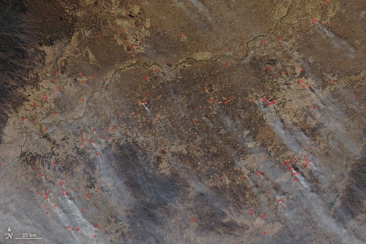

PyroScale
Explore NASA’s satellite hotspot detections on a global 3° grid. Draw an area to compare seasons, check the monthly outlook, or try an illustrative what-if scenario.
Our mission
Make decades of satellite hotspot data useful.
PyroScale helps people explore regional detection patterns, compare seasons, and understand how a forecast performs.
MODIS and VIIRS see the Earth at different resolutions and times. PyroScale shows each satellite’s record and tests where their overlapping observations can support an experimental estimate for earlier years.


How PyroScale works
We group NASA FIRMS thermal anomalies into monthly grid cells and check where the archive has gaps.
Align the satellite records
VIIRS can detect smaller hotspots than MODIS. We compare coincident cell-month counts from Terra and Suomi-NPP, and test the estimates on later months and unseen regions.
Train and test the forecast
The NOAA-20 outlook compares a Poisson LightGBM model with seasonal baselines on rolling historical forecasts. Each lead uses the selected method. Cell-level ranges appear where calibration data support them.
Explore what-if scenarios
Change hypothetical multipliers for warming, rainfall, ignitions, or fuel management and see how those assumptions affect detection estimates in the selected cells.
Start with a place you know.
Try your hometown, a place you’ve visited, or a region you’re learning about. You can start with a quick search and follow whichever pattern catches your eye.
Find a familiar place
Search for a city or country, or draw a box around the area you’re curious about.
Search placesSpot a pattern
Open the calendar and look for months that keep lighting up. Do you see the same pattern every year?
Open the calendarSee what might come next
Pick a forecast month, look at the uncertainty range, then try changing one assumption in the Scenario lab.
See the forecastFor current fire alerts and evacuation guidance, follow your local authorities.
Our team
Phoenix Protocol
We’re building PyroScale for the NASA Space Apps Challenge.
Haroon Abbas Chaudhry
Zayan Muneer
Abdul Subhan
Ibrar Ahmed Sardar
Zaid Ali Sheikh
Shahmeer Abdullah Malik
Team profiles will appear here.